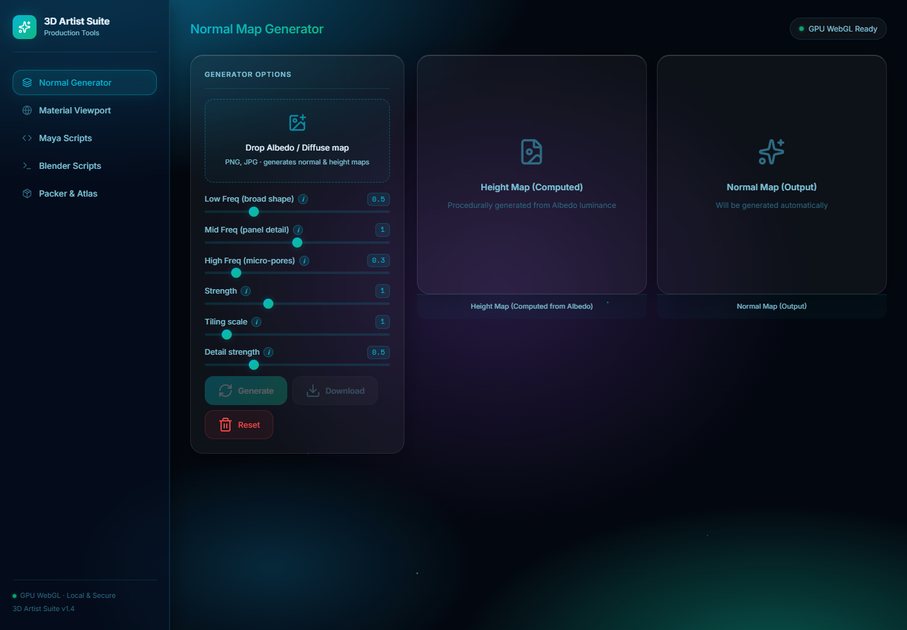

Rooted in 3D.
Driven by
possibility.
I build characters, bring movement to ideas, and make tools for the people creating what comes next.
Different disciplines.
One creative point of view.
3D is at the heart of my practice.
Design and editing complete the picture.
Selected studies and projects. Open a piece for the complete view.
3D & animation
Characters. Movement. Real-time worlds.
PRIMARY PRACTICE↗02Graphic design
Identity. Typography. Visual storytelling.
↗03Video & motion
Editing. Rhythm. Stories worth watching.
↗Good tools.
More room to create.
Useful things I’ve built for the everyday
work of a 3D artist.
Meet Toolkit.
Normal maps, material previews, channel packing, and texture atlases. A collection of focused tools for the steps between your idea and the final asset.
Explore Toolkit ↗
OPEN THE WORKBENCH ↗A few workflow helpers.
Browse all tools ↗Movement.
Meaning.
An artist’s eye.
A maker’s mindset.
I’m Harpreet Singh Uppal—better known as Happy Singh. My work brings together 3D animation, rigging, and real-time production, with a background in graphic design and video editing.
I enjoy the whole process: shaping an idea, working through the technical details, and bringing it to life. Sometimes that means creating a character. Sometimes it means building a tool that makes the next project easier.
AI is a core part of how I work—it drives a large share of my process—paired with hands-on 3D skill and technical judgment. That combination, not one on its own, is what turns an ambitious idea into a finished, production-ready asset.
Maya · Blender · ZBrush · Substance Painter · Unity · Unreal Engine
DESIGN & POSTPhotoshop · Illustrator · Premiere Pro · After Effects
Let’s give it
another dimension.
↗3D projects, creative collaborations, and conversations about what’s next.